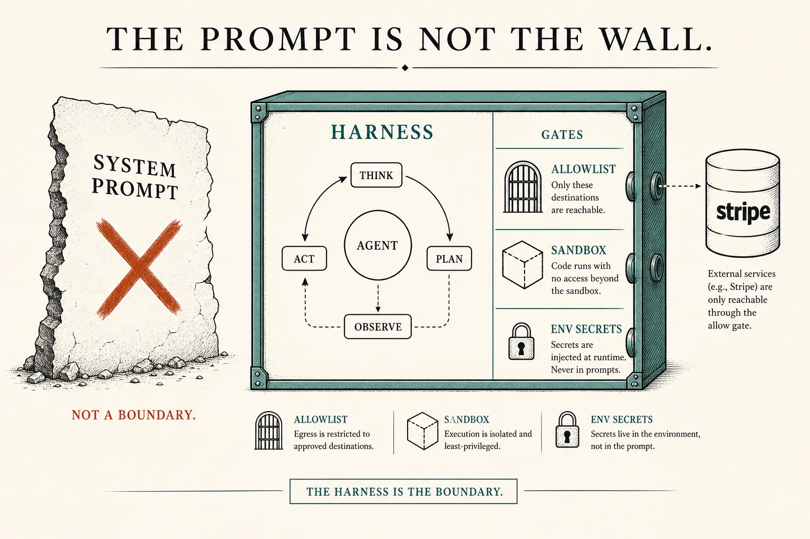
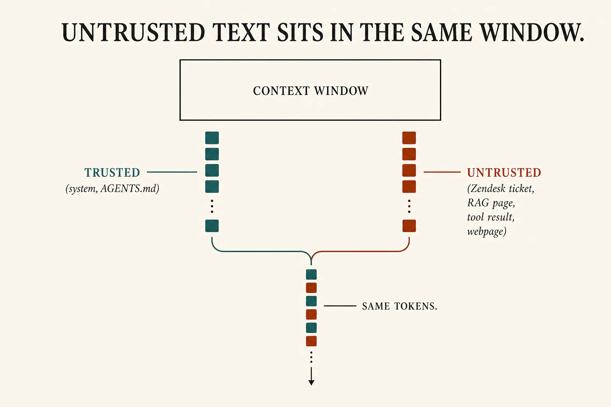
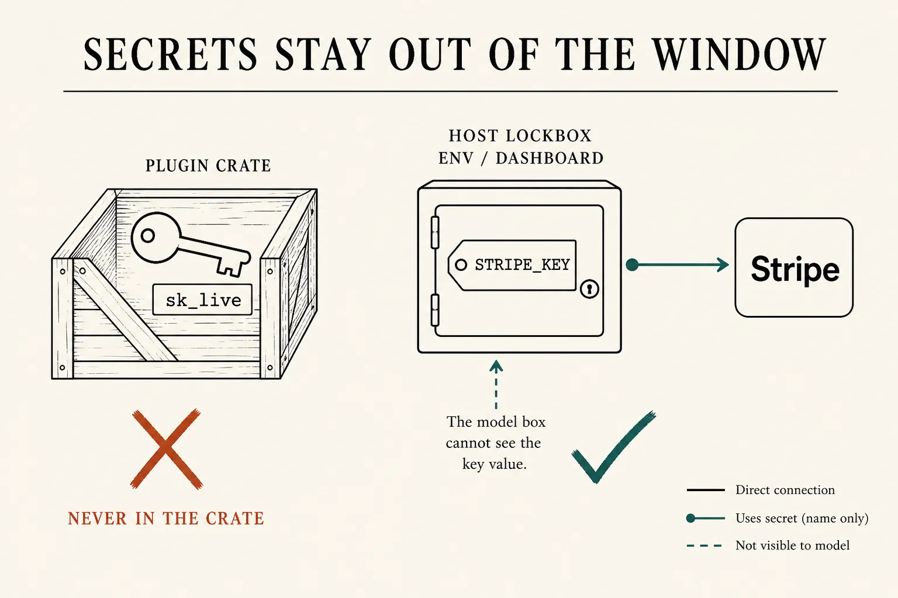

Agent security
The prompt is not the wall
Lesson 0007 put allow in the harness. Lesson 0015 made it a Guard. Lesson 0017 said the crate holds names, not keys. Tonight is why those three are security, not style. The model cannot be the boundary. Untrusted text shares the same token window as your Guide. Cap what the loop is able to run. Keep secrets out of that window.
What this is. Agent security as architecture: least-privilege tools (OWASP LLM01 / LLM06), treat ticket/RAG/tool-output as data, secrets in the host not the crate. Anthropic: model-layer defenses are never 100%; cap blast radius in the environment. Simon Willison: assume untrusted text can subvert instructions — limit what those instructions can trigger. How we contain Claude · OWASP Top 10 for LLM Apps
What this is not. A jailbreak catalogue. Attack recipes. Re-teaching evals, traces, or plugins. Dual-LLM, full VM design, the rest of the OWASP ten — parked. Not a ChatGPT menu named “Security.”
- 1 · AllowTools the loop may run. Guard the rest.
- 2 · DistrustTicket, RAG, tool output: same tokens.
- 3 · KeepSecrets in env. Never in the crate.
0005 still holds: the model writes a slip. Security is whether you run it, and whether a key was ever in RAM.

Architecture first. Claude Code: instructions in the prompt do not expand what the harness allows. They also do not reliably shrink it.
Two layers, only one is a wall
Anthropic splits the risk: what the agent tends to do (prompts, classifiers — probabilistic, never 100%) vs what it is able to do (allowlists, sandboxes, egress, credentials that never enter the box). Human-in-the-loop click-to-approve fatigues; their telemetry was ~93% approve. Containment is the floor. How we contain Claude
OWASP LLM01 names the reason the prompt fails as a wall: the model sees one sequence of tokens. Your Guide and a Zendesk body are not two rooms. Indirect injection is the same idea when the text arrives through a retrieved page or a tool result, not through the user field. RAG does not fix this. LLM01: Prompt Injection
- Allow Ship
search_docsandget_invoice. Do not putstripe.refunds.createon the list until policy is a code gate (0015). Read-only Stripe is a smaller blast radius than write. - Distrust HTTP body, RAG chunk, tool paste, webpage: data. Simon: if untrusted text can reach a model with tools, assume it can subvert the Guide. Limit the tools.
- Keep Stripe key in host env / dashboard. Name only in the crate (0017). If the credential never enters the window, it cannot leave the window. OWASP LLM02

Lesson 0002’s RAM. Delimiters are still tokens. The Guard is not.
POST /assistant · the wall that holds
# NOT A BOUNDARY
system: "never refund annual plans"
# model still proposes stripe.refunds.create
# you ran it last night (0014 FAIL was the world; this is why)
# 1 ALLOW — 0007 / 0015
tools = [search_docs, get_invoice] # no refunds.create
# or hook: deny unless policy_ok == true
allow(slip) == false
messages.append("denied")
# Factor 8: own the gap between selection and invocation
# 2 DISTRUST — same window (0002)
untrusted: request.text | RAG pages | tool results
# do not treat them as Guide. Do not teach the model
# a magic phrase. Cap the tools instead.
# Anthropic: audited connector ≠ audited data
# 3 KEEP — 0017
# BAD: SKILL.md or AGENTS.md contains sk_live_…
# GOOD: env STRIPE_KEY; plugin variable is the name
# tool runner reads env; transcript never does
# Anthropic: credentials that never enter the sandbox
# cannot be exfiltrated from it
# LEAST PRIVILEGE
stripe.Balance.retrieve # maybe
stripe.refunds.create # only behind policy + allow
What this shows. Same billing assistant as 0014–0019. Security is not a fourth grader. It is which slips can run and which bytes were never in RAM. 0018’s trace still shows the denied tool span. 0019’s regression suite should include “untrusted ticket cannot mint a refund.”

Kitchen optional and unused. The crate is distribution. The secret store is the host.
Skill: name the wall that held
Prompt is paper. Allow is the list. Untrusted is still data. Secret never enters RAM.
Same refund, four looks
Who owns the wall
Developer
Allowlist the tools. Guard mutations in code. Put keys in env. Do not paste a live key into a prompt “so the agent can test.”
Team lead
Deny Read(.env) in the repo harness. Marketplace crate ≠ audited data inside it. Approval dialogs are not a substitute for a small allowlist.
Next
The named advanced path ends here. Ask for a work problem to design, or a measured add (RAG, multi-agent) that still has to pass 0014 and tonight’s wall.
Parked: dual-LLM quarantine, VM/gVisor internals, the other eight OWASP items as a course, red-team catalogues, jailbreak strings. This lesson does not include attack recipes. If a channel is untrusted, assume it can steer the model — then look at the allowlist.
Check
Primary source. How we contain Claude (model layer never 100%; cap what the agent can reach; credentials out of the sandbox). Threat name: OWASP LLM01. Blast radius: Simon Willison. Product form: Claude Code permissions (prompt ≠ allow list). Crate: Cursor Plugins (variable names, not values).
Card: agent security. Allow job: harness. Guard: team floor. Crate: plugins.